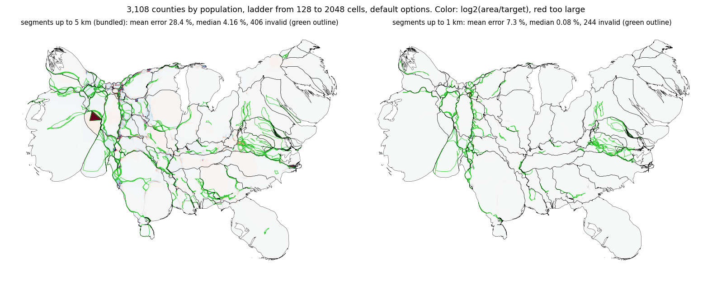

Sparse vertices are a main cause of the tangled polygons and the high error of the coarse levels of a ladder. Densifying the bundled counties from 5 km to 1 km lowers the mean error of a ladder from 128 cells from 28.4 % to 7.3 % (from 256 cells 4.2 % to 1.5 %) and the invalid polygons of districts from 24 to 0. create_flow_cartogram and CartogramWorkflow now warn, with a recommended segment length, when more than 0.5 % of the segments are expected to outgrow 4 cells of the finest grid; the states do not warn.
After the square-grid fix, the first invalid polygons of counties on a grid of 128 appear at iteration 27 (Arapahoe and Denver, Colorado: fold167.py). A bilinear velocity field cannot fold a polygon in one step (a step moves the fastest point 0.2 cells, so the relative displacement across a distance w is at most 0.4 w), so the crossing comes from the straight edges between vertices that are sparse relative to the width of a narrow part. Densifying the input confirms it: one run of 300 iterations on a grid of 128 has 16, 2, 1 and 0 invalid polygons with maximum segments of 5, 2, 1 and 0.5 km (dens167.py), with the same error (114.6 %).
Default options, mean / median error and invalid polygons after the ladder (dens167b.py, dens167c.py). Left column is the bundled 5 km.
| input | ladder | 5 km | 2 km | 1 km | 0.5 km |
|---|---|---|---|---|---|
| counties | 64x6 | 17.13 % / 1.25 %, 641 | 5.24 % / 0.03 %, 316 | ||
| counties | 128x5 | 28.37 % / 4.16 %, 406 | 11.11 % / 0.35 %, 326 | 7.32 % / 0.08 %, 244 | 6.38 % / 0.41 %, 160 |
| counties | 256x4 | 4.19 % / 0.09 %, 321 | 1.75 % / 0.06 %, 252 | 1.54 % / 0.09 %, 144 | 1.76 % / 0.14 %, 96 |
| counties | 512x3 | 3.40 % / 0.15 %, 301 | 3.40 % / 0.24 %, 73 | 1.52 % / 0.25 %, 57 | 1.54 % / 0.11 %, 38 |
| districts | 128x3 | 0.88 % / 0.75 %, 15 | 0.89 % / 0.58 %, 7 | 0.48 % / 0.26 %, 2 | 0.55 % / 0.29 %, 2 |
| districts | 64x4 | 1.07 % / 0.62 %, 24 | 1.58 % / 1.24 %, 9 | 0.57 % / 0.21 %, 0 | 0.84 % / 0.54 %, 0 |
| districts | 32x5 | 3.53 % / 1.30 %, 177 (stalled) | 3.23 % / 0.74 %, 160 (stalled) | 0.55 % / 0.19 %, 90 (stalled) | 0.47 % / 0.20 %, 57 |
| states | 64x3, 32x5 | no invalid polygons, same error | same | same | same |
The error falls and the invalid polygons fall with the vertex density down to about 1 km; the states, whose regions change little, do not change. A too coarse start (counties from 64 and 128 cells) becomes usable at 1 km (5.2 and 7.3 %). The cost is the number of vertices (193,856 at 5 km, 768,580 at 1 km for the counties) and a run time of 10 to 25 s instead of 10 to 17 s.
A segment of a region whose target is larger than its area grows with the linear factor sqrt(target / area) (stretch167.py). Share of the segments whose expected length exceeds 4 cells of the finest grid (2048 cells, 4.3 km):
| input | largest enlargement | segments over 4 cells | boundary length over 4 cells | suggested length |
|---|---|---|---|---|
| states | 9.8 | 0.05 % | 0.05 % | 1.7 km |
| districts | 23.5 | 3.18 % | 3.48 % | 0.73 km |
| counties, population | 21.8 | 0.88 % | 1.02 % | 0.78 km |
| counties, white | 19.2 | 0.68 % | 0.79 % | 0.89 km |
| counties, Hispanic | 29.7 | 1.01 % | 1.13 % | 0.57 km |
The states, which gain nothing from denser vertices, are one to two orders of magnitude below the counties and districts, which do; the threshold of 0.5 % of the segments sits between them. The suggested length is 4 cells / largest enlargement, which is 0.7 to 0.9 km for the inputs that benefit and the value at which the table above saturates (1 km and 0.5 km agree). The check uses the finest grid of the ladder (or the grid of a single run) because the cell size sets how narrow a feature the flow can still resolve.
warn167.py runs create_flow_cartogram(grid="auto") on the bundled data: the states give no warning, the districts and counties at 5 km warn once (before the first level) and give none after densify_coverage(max_segment_length=1000).

Counties by population, ladder from 128 to 2048 cells with default options, bundled 5 km segments (left) and the same counties densified to 1 km (right). Color is log2(area/target); counties with an invalid output polygon are outlined in green.